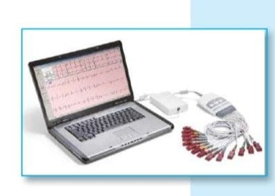

ما أهمية استخدام الحاسوب في المجتمع؟
مع التطور الهائل الذي شهده العالم في عقود القرن الماضي اكتشفت و ابتكرت الكثير من الاجهزة
التي تقدم الخدمة للأنسان,و تسهل عليه طريقة حياتة,و من اهم الابتكارات الحاسوب الذي يستخدم
في الكثير من اعمالنا اليومية لتقليل الجهد و زيادة الانتاج و السرعة و الدقة في انجاز الاعمال,و
-:يمكن ايجاز تلك الاستخدامات في
-:اولا:مجال التعليم
:يؤدي الحاسوب دورا مهما في تطوير اساليب التعليم اذ يساعد على
.أ- عرض الدروس التعليمية
.ب-عرض التجارب العلمية على نحو سهل و ممتع
.ج-تنمية مهارات الطلاب لتحقيق الاهداف التعليمية
.jpg)
-:ثانيا:مجال الطب
:يستخدم في الكثير من المجالات الطبية,مثل
.أ-رسم تخطيط عمل القلب و الدماغ
.ب-التحكم بالاجهزه الطبية بغرف العناية المركزة
.ج-المساعدة على اجراء العمليات الجراحية الدقيقة
.د-طباعة التقارير للتحليلات و الفحوصات
-:ثالثا:مجال الأدارة
:يستخدم الحاسوب في كثير من الأعمال الأدارية و منها
أ-نظام اصدار الوثائق الرسمية للمواطنين
.(البطاقة الموحدة,جواز السفر)
ب-نظام الاعمال المصرفية في تحويل الودائع و حسابات
.القروض و المبالغ من حساب مصرفي لاخر
.jpg)
-:رابعا:مجال الصناعة
ينشر استخدام الحاسوب في المجالات الصناعية
المختلفة مما عزز الدقة و السرعة في الانتاج,و
:من الامثلة عليها
.أ-مصانع الاجهزة الدقيقة مثل اجهزة الحاسوب و الهواتف الذكية
ب-مصانع الاجهزة الخفيفة و الثقيلة مثل اجهزة التبريد
.و التكييف و الاجهزة المنزلية و السيارات و الطائرات و الصناعات النفطية
.jpg)
-:خامسا-:مجال الاتصالات
الاتصالات التي تتم عن طريق تطبيقات الحاسوب
(Internet)و المعتمدة على شبكات الانترنت
(Social media)لها اثر كبير في تواصل المجتمعات من خلال العديد من و سائل التواصل الاجتماعي
التي من الممكن ان تأخذ العديد من الاشكال بما في ذلك مواقع مثلا
و تطبيقات التراسل الفوري مثل Facebook و Twitter
.Viber و WhatsApp
.jpg)